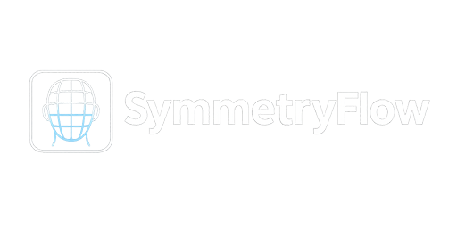

Blender 4.x+ Addon
Stop wasting hours on broken mirrors.
Production-grade weight paint mirroring and real-time diagnostics — for posed, stylized, and overlapping meshes.
PAIR / SINGLE MODE
AUTO-DETECT DIRECTION
UV SPACE MIRRORING
QUICK FIX SOLVER & SO MUCH MORE
Better Weight Transfer For You